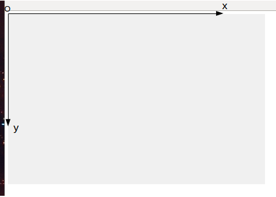
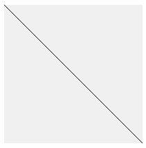

"Copier-coller" le dossier "ex0" et renommez-le en "p5_a2_1". Vous allez travailler avec ce dossier "p5_a2_1". Dans la suite, vous devrez effectuer ce "copier-coller-renommer" pour chaque nouvel exemple sans que j'ai besoin de le préciser.
À l'aide d'un éditeur de texte, saisissez le code suivant dans le fichier "script.js"
script.js
function setup() {
}
function draw() {
}
Si vous testez cet exemple en cliquant sur le fichier "index.html", votre navigateur par défaut devrait se lancer, mais vous devriez obtenir une page blanche. Ceci est tout à fait normal, nous avons bien notre premier programme p5.js, mais celui-ci ne fait strictement rien.
Pourtant, la structure de base est déjà en place.
Nous avons 2 fonctions :
Pour l'instant, nous allons uniquement utiliser la fonction "setup". Nous reviendrons sur la fonction "draw" quand nous nous intéresserons aux animations.
La première instruction que nous allons voir, va nous permettre de créer une surface de dessin (canvas en anglais) :
createCanvas(300,200)
permet de créer une surface où nous allons pouvoir dessiner de 300 pixels de large et de 200 pixels de haut.
Saisissez et testez ce programme (en cliquant sur "index.html")
script.js
function setup() {
createCanvas(800,600);
}
function draw() {
}
Comme vous pouvez le constater, cela ne change rien. En fait, la surface de dessin a bien été créée, mais comme sa couleur de fond est blanche...nous ne la voyons pas.
Nous allons modifier la couleur de fond pour la faire apparaitre (la gestion des couleurs sera vue un peu plus tard).
Saisissez et testez ce programme (en cliquant sur "index.html")
script.js
function setup() {
createCanvas(800,600);
background(240);
}
function draw() {
}
Comme vous pouvez le constater, la fenêtre de dessin est bien présente (encore une fois, nous reviendrons sur la fonction "background" et la gestion des couleurs un peu plus tard).
Afin de bien distinguer la surface de dessin du reste de la page, nous laisserons (au moins dans un premier temps) cette couleur de fond.
La fonction "point" va nous permettre de dessiner un point (pixel) sur l'écran
point(200,100)
Que représente le "(200,100)" dans "point (200,100)" ?
Tout simplement les coordonnées du point que nous voulons dessiner.
Qui dit coordonnées, dit axe x, axe y et origine O :
Saisissez et testez ce programme (en cliquant sur "index.html")
script.js
function setup() {
createCanvas(800,600);
background(240);
point(400,300);
}
function draw() {
}
Observez bien, vous devriez voir un point apparaitre au milieu de la surface de dessin.
Modifiez les coordonnées du point créé dans le "À faire vous-même 2.4" comme bon vous semble, vérifiez le résultat.
En vous aidant d'une boucle, tracez un segment de droite. Vous devez obtenir ce résultat :
Tracez un segment de droite, vous devez obtenir ce résultat :
Tracez un segment de droite. Vous devez obtenir ce résultat :
Écrivez un programme permettant d'obtenir une "ligne en pointillée" comme ci-dessous :
Il est possible de modifier la couleur d'un point grâce à la fonction stroke
Saisissez, analysez et testez ce programme :
function setup() {
createCanvas(800,600);
background(240);
stroke(255,0,0);
point(400,300);
}
function draw() {
}
Comme vous pouvez le constater le point est toujours situé au centre de l'écran mais maintenant, il est de couleur rouge.
Que signifie le (255,0,0) du stroke ?
Toutes les combinaisons sont possibles, vous trouverez sur ce site un nuancier qui vous indiquera les valeurs des canaux Rouge, Vert et Bleu (RVB ou RGB en anglais).
Écrivez un programme permettant d'obtenir une "ligne bicolore" comme ci-dessous :
Vous devrez utiliser une boucle "for" et un "if/else".
Écrivez un programme permettant d'obtenir un drapeau tricolore comme ci-dessous :